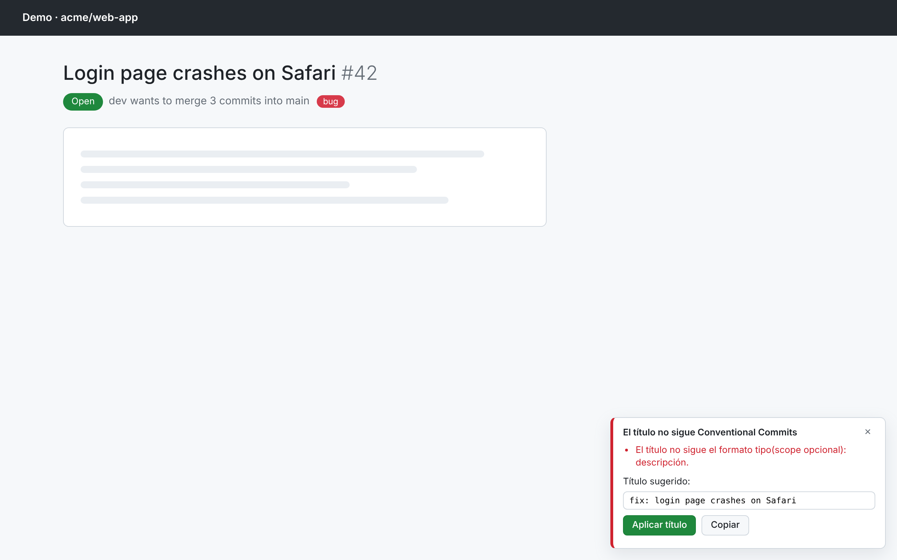
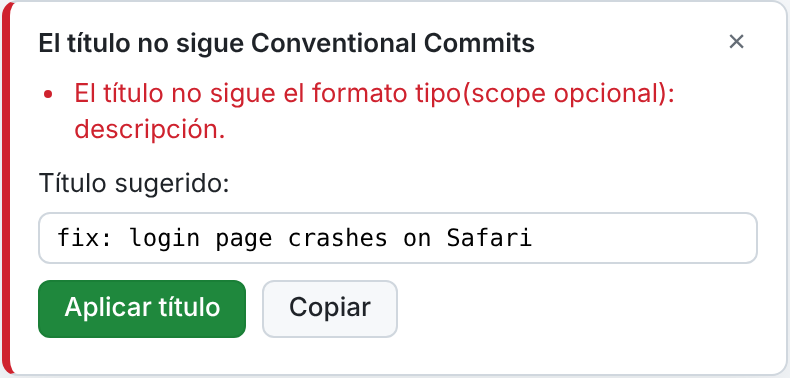

Conventional PR Check
Hecho por
Elikar Systems
Extensión para GitHub
Revisa el título de cada
pull request
Un panel en GitHub te avisa al instante si el título no sigue Conventional Commits.
github.com/acme/web-app/pull/42

